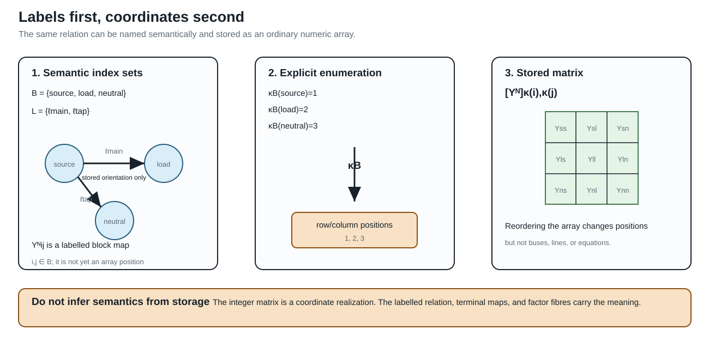
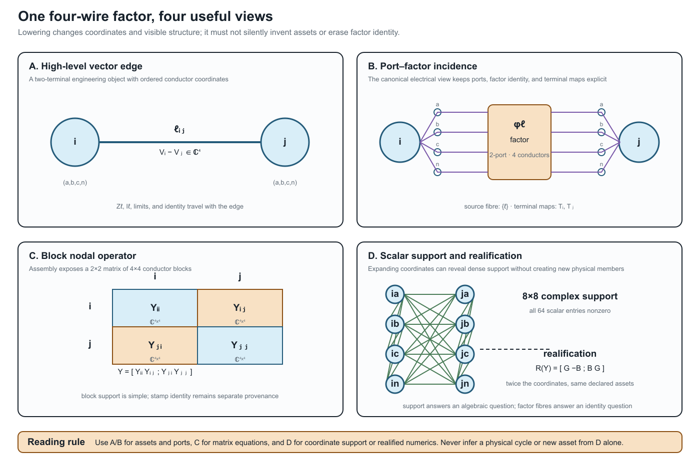

How to read power-network diagrams and equations
Page status: introductory translation bridge; the examples are deliberately small, while the terminology is used throughout the multiconductor chapters.
A power-network diagram is not a circuit equation, and a circuit equation is not automatically a graph. Before interpreting an arrow, edge, node, or matrix entry, ask three questions:
- What object is drawn? An asset, a terminal, a port, a factor, a retained voltage coordinate, or an algebraic support relation?
- What quantity is attached to it? A voltage, current, complex power, impedance, admittance, limit, state, or provenance identifier?
- What has already been compiled away? Parallel-member identity, conductor coordinates, an internal transformer node, a neutral, or a decision state?
The same physical feeder can therefore have several faithful diagrams. The diagram is a view with a declared semantic level, not an unqualified picture of the network.
A visual legend before the equations
The book uses familiar electrotechnical symbols where possible, but the symbol does not carry the entire model. IEC 60617 is a symbol library and IEC 61082 is a document-presentation standard; neither one determines the semantics of a book-specific lowering or reduction. Read each maintained figure with this legend:
| Mark | House meaning | Do not infer |
|---|---|---|
| solid electrical connector | declared attachment in the displayed view | that the attachment is a physical conductor in every other view |
| double or bundled stroke | several ordered conductors | that phases or neutral may be discarded |
| dashed arrow | refinement, quotient, decomposition, or compilation map | physical power-flow direction |
| separate control arrow | tap, switch, protection, or decision relation | an extra series branch |
| grounding branch | explicit neutral/earth/reference connection | that the grounding can be absorbed without a guard |
| $x_1$ or $\ell i j$ label | persistent source identity | an array coordinate or a flow sign |
| pole/state label such as $\sigma_a$ | per-conductor or per-pole operating state | one scalar open/closed state for the whole asset |
| $\lambda_{ij}$ factor label | computational coupling with declared provenance | a physical line, outage asset, or ownership edge |
Single-line diagrams answer “which equipment and terminal-level connections are present?” Multi-line diagrams answer “which conductors, neutral paths, and terminal connections are present?” A factor or equation view answers “which constitutive relation is being assembled?” A compiled graph answers “what does this particular algorithm receive?” These are related views, not successive truth values.
When a figure expands a transformer, line, regulator, or switch, look for the identity fibre and the omitted-semantics note before interpreting a new edge. For example, a complete graph of pairwise transformer leakage factors may be a faithful equation decomposition while still being the wrong graph for asset outages or ownership. The same warning applies to a nodal-support graph whose edges record algebraic coupling rather than physical lines.
The high-risk cases are collected in the special semantic overlays plate in the foundations section: neutral grounding, nominal-$\pi$ shunts, phase-selective switching, and $n$-winding leakage factors. When one of these appears compressed into a single-line symbol, look for the state scope and edge provenance in the caption or map certificate.
The scalar circuit in one minute
For a scalar branch stored from $i$ to $j$, write the voltage difference
\[\Delta v_{\ell ij}=v_i-v_j.\]
Ohm's law, or the branch constitutive relation, is
\[i_{\ell ij}=y_\ell\Delta v_{\ell ij}, \qquad y_\ell=z_\ell^{-1}.\]
This equation says how the branch responds to its terminal voltages. It does not say that current must flow from $i$ to $j$ in operation: the computed complex current may have either sign or phase. The stored order $\ell ij$ is an index convention, consistent with the BMOPFTools-style notation used in this book.
Kirchhoff's current law (KCL) is a balance at a node. With currents defined as entering the node, one possible convention is
\[\sum_{e\in\delta(i)} i_{e\to i}+i_i^{\mathrm{inj}}=0.\]
The signs change if the convention changes; the physical balance does not. Kirchhoff's voltage law (KVL) says that the oriented voltage differences sum to zero around a compatible closed circuit path. In a nodal formulation this is usually enforced indirectly by assigning one voltage to each retained node and deriving every branch drop from endpoint voltages. A cycle in a matrix support graph is not automatically such a physical circuit path.
These three statements have different jobs:
| Statement | Role | What it does not define |
|---|---|---|
| Ohm/constitutive law | element behaviour | asset identity or operating direction |
| KCL | balance at a junction | which graph view produced the junction |
| KVL | compatible voltage differences around a circuit loop | a cycle in every derived support graph |
Labels are not coordinates
The subscripts in a power-network equation are semantic labels first and array positions second. A bus may be named $source$, $load$, or $i_\mathrm{north}$, and a line may be identified by $\ell_\mathrm{main}$; neither name is required to be a consecutive integer. Software normally enumerates those labels so that it can store an ordinary array. That enumeration is a coordinate chart, not a change in the network.
For example, begin with the labelled bus set
\[\mathcal B=\{\text{source},\text{load},\text{neutral}\}, \qquad \kappa_{\mathcal B}:\mathcal B\overset{\sim}{\longrightarrow}\{1,2,3\}.\]
The semantic nodal blocks are $\mathbf Y^{\mathrm N}_{ij}$, with $i,j\in\mathcal B$. After choosing $\kappa_{\mathcal B}$, a software array stores the same block as
\[\bigl[\mathbf Y^{\mathrm N}\bigr]_{\kappa_{\mathcal B}(i),\kappa_{\mathcal B}(j)} =\mathbf Y^{\mathrm N}_{ij}.\]
The familiar integer-indexed matrix is therefore a realization of a label-indexed operator family. Reordering the array changes positions, not the buses or the physical relation. The same rule applies to the signed edge–cycle matrix: its semantic entries are $A_{i\ell}$ and $C_{\ell\gamma}$ for $i\in\mathcal B$, $\ell\in\mathcal L$, and $\gamma\in\Gamma$; an implementation may enumerate all three sets before performing ordinary matrix multiplication.

This is why $\mathbf Y_\ell$ (an element-intrinsic matrix), $\mathbf Y^{\mathrm N}_{ij}$ (a bus-to-bus block), and $[\mathbf Y^{\mathrm N}]_{\kappa(i),\kappa(j)}$ (an array position) should not be read as interchangeable notation. In the scalar case a block may be one number; in the multiconductor case it is generally a matrix.
The same line with multiple conductors
For a four-wire line, the scalar voltage and current become ordered vectors:
\[\mathbf U_i=[U_{i,a},U_{i,b},U_{i,c},U_{i,n}]^{\mathsf T}, \qquad \mathbf I_{\ell ij} =\mathbf Y_\ell \left( \mathbf U_i[\mathbf N_{\ell i}] - \mathbf U_j[\mathbf N_{\ell j}] \right).\]
The matrix $\mathbf Y_\ell$ may be dense. Its off-diagonal entries represent mutual coupling between conductor coordinates; they are not extra physical lines. A vector-valued edge is therefore a useful bridge phrase for a two-terminal multiconductor factor, but it is not a new canonical graph class. The precise source object remains a typed attributed multigraph edge with vector terminal spaces and matrix-valued constitutive data.
When a device has three or more ports, the bridge phrase stops being adequate: retain a typed port–factor relation. A multiwinding transformer is one factor with several port bundles until a guarded compilation explicitly creates a two-terminal realization.

The four panels are deliberately paired. Panels A and B are the useful places to ask which asset or factor is present; panel C is the natural place to write the assembled block equation; panel D is a coordinate-level support or solver view. The dense lines in D are algebraic coupling, not a claim that the source contains that many physical branches. This scoped correspondence is checked by the executable witness registered as ARCH-BLOCK-001.
What a lossy edge looks like
Power engineers often draw an edge and imagine power flowing through it as one quantity. A circuit model normally computes terminal currents first, then complex power at each terminal, for example
\[S_{\ell ij}=\operatorname{diag}(\mathbf U_i[\mathbf N_{\ell i}]) \mathbf I_{\ell ij}^{*}.\]
Series impedance, endpoint shunts, mutual coupling, and grounding can all make the two terminal powers differ. Even the terminal currents need not be simple negatives when shunts are present. A lossy edge is not a violation of graph theory; it is a constitutive factor with nonzero dissipation or local exchange. If a diagram shows one line with a $\pi$ model, decide whether its shunts are inside the factor or drawn as separate factors before comparing currents or limits.
Reading scalar, vector, and block notation
The following translation is safe only when the qualifiers are retained:
| Diagram or phrase | Mathematical reading | Main qualifier |
|---|---|---|
| scalar edge $i--j$ | one voltage coordinate at each endpoint | positive-sequence or single-conductor scope |
| vector-valued edge | $\mathbf Z_\ell$ or $\mathbf Y_\ell$ acts on ordered conductor coordinates | still a two-terminal factor |
| vector-valued node | bus $i$ owns an ordered terminal space $\mathbf U_i$ | terminals may be missing, permuted, or grounded |
| block nodal matrix | $\mathbf Y^{\mathrm N}_{ij}$ maps one bus-terminal block to another | block support is not an asset multigraph |
| scalar-expanded support graph | each conductor coordinate is a vertex | cycles mean algebraic coupling, not necessarily physical loops |
| realified model | real and imaginary coordinates are stacked | doubled coordinates are not doubled assets |
The report by Geth, Claeys, and Heidari gives a practical four-wire example of this translation: series impedances and shunts are matrices, current-injection methods are centered on a nodal-admittance representation, and radial backward–forward sweep uses a different impedance-oriented computational view [1]. Those are alternative formulations of the same declared circuit model, not competing definitions of what a bus or line is.
A diagram-reading checklist
Before using a graph in a proof, algorithm, or optimisation model, annotate it with:
- level: asset, equipment/terminal, port–factor, equation, block support, or scalar support;
- coordinates: scalar, phase/neutral vector, sequence, rectangular real, or another declared basis;
- orientation: stored terminal order, sign convention, or actual control direction;
- constitutive scope: series only, nominal-$\pi$, transformer, shunt, grounding, nonlinear load, or an n-port relation;
- preservation: identities, KCL/KVL/terminal behaviour, limits, decisions, and provenance that remain available;
- loss: what has been summed, eliminated, projected, realified, or made implicit.
This checklist is the short route into the longer two topology levels and the nodal projection chapter. There the same distinctions are stated as maps between typed objects and block operators rather than as visual intuition alone.